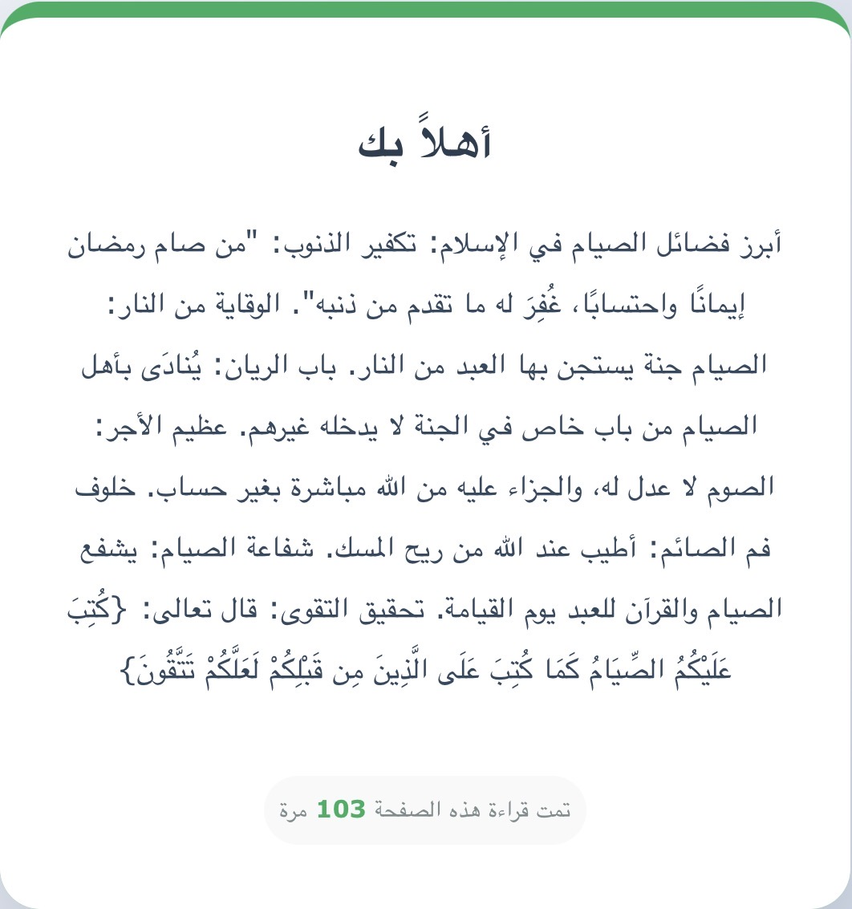

أبرز فضائل الصيام في الإسلام:
تكفير الذنوب: "من صام رمضان إيماناً واحتساباً، غُفِر له ما تقدم من ذنبه".
الوقاية من النار: الصيام جُنّة يستجن بها العبد من النار.
باب الريان: يُنادى بأهل الصيام من باب خاص في الجنة لا يدخله غيرهم.
عظيم الأجر: الصوم لا عدل له، والجزاء عليه من الله مباشرة بغير حساب.
خلوف فم الصائم: أطيب عند الله من ريح المسك.
شفاعة الصيام: يشفع الصيام والقرآن للعبد يوم القيامة.
تحقيق التقوى: قال تعالى: {كُتِبَ عَلَيْكُمُ الصِّيَامُ كَمَا كُتِبَ عَلَى الَّذِينَ مِن قَبْلِكُمْ لَعَلَّكُمْ تَتَّقُونَ}.